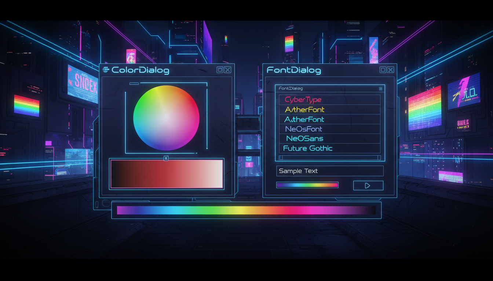

Вибір кольору та шрифту

// Діалог вибору кольору
ColorDialog^ colorDlg = gcnew ColorDialog();
colorDlg->FullOpen = true;
colorDlg->Color = textBox->ForeColor;
colorDlg->CustomColors = gcnew array<int> {
Color::ToArgb(Color::Red),
Color::ToArgb(Color::Green),
Color::ToArgb(Color::Blue)
};
if (colorDlg->ShowDialog() == DialogResult::OK) {
textBox->ForeColor = colorDlg->Color;
panel->BackColor = colorDlg->Color;
}// Діалог вибору шрифту
FontDialog^ fontDlg = gcnew FontDialog();
fontDlg->Font = textBox->Font;
fontDlg->Color = textBox->ForeColor;
fontDlg->ShowColor = true;
fontDlg->MinSize = 8;
fontDlg->MaxSize = 72;
if (fontDlg->ShowDialog() == DialogResult::OK) {
textBox->Font = fontDlg->Font;
textBox->ForeColor = fontDlg->Color;
}